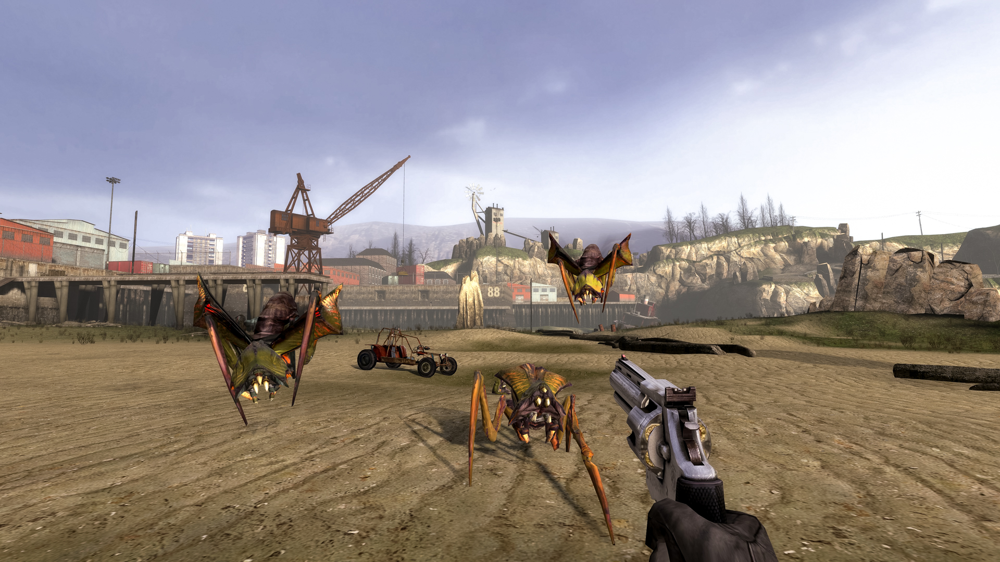
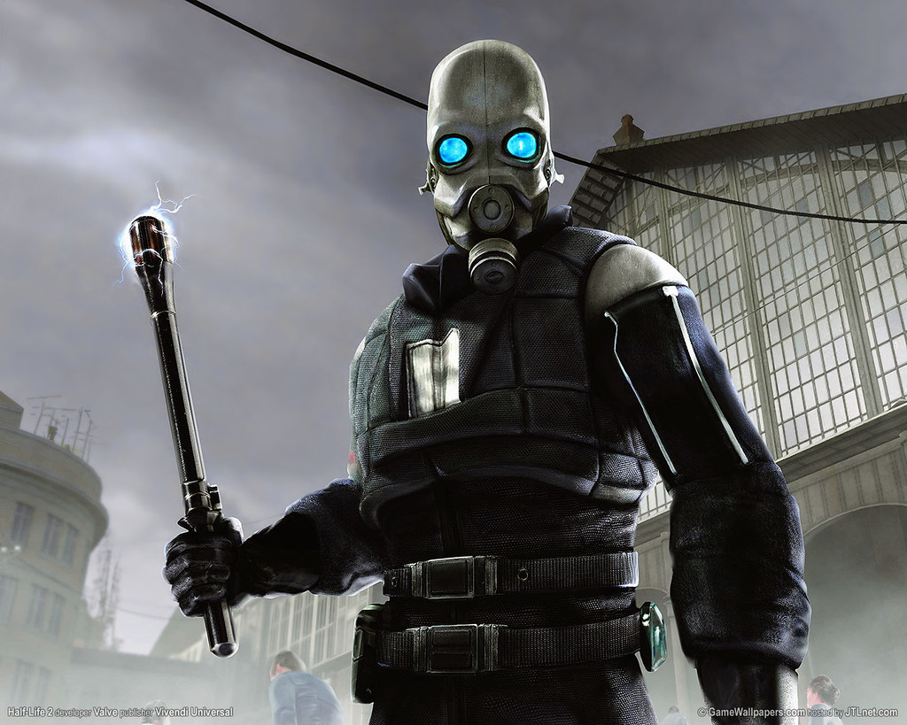

Half-Life 2 is first and foremost a first person shooter, however--just like its predecessor--The game also has light puzzle elements. The game is built on an in-depth physics system in which all non-static objects can be picked up, moved around, or interacted with. For example, you may have a puzzle where you need to use props in your environment to weigh down a lift to cause another one to rise so you can get to another area. You even get a weapon called the "Gravity gun" which can pick up objects that the player cannot and lets you place and throw them as needed for both combat and puzzles. You slowly build your arsenal over the course of the game with each weapon having its own use for a different combat scenario. On top of this, most enemies in the game are very complex and have very good AI. The human soldier and police enemies will try to flank you and use cover, while enemies like zombies can hit props at you.
In Half-Life, Gorden Freeman(the main character) scientists at the Black Mesa Research Lab opened a portal to another dimesion. This is the story of the first game, and at the end a mysterious figure known as the G-man puts Gorden into stasis until he is needed. Several years later, an alien empire have invaded earth after the Black Mesa incident and implement a police state, basically enslaving humanity for experiments and such while enacting a supression field which prevents anyone from having children. Gorden is placed by the G-man on a train to City 17, the home of the citadel, which is the seat of the combine's power on earth. Gorden then meets up with the resistance, who is made up of many of the other scientists from Black Mesa, and works with them to try and take down the combine. This is the basic plot of the game.
